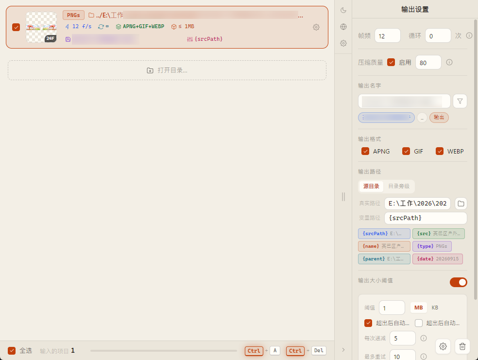
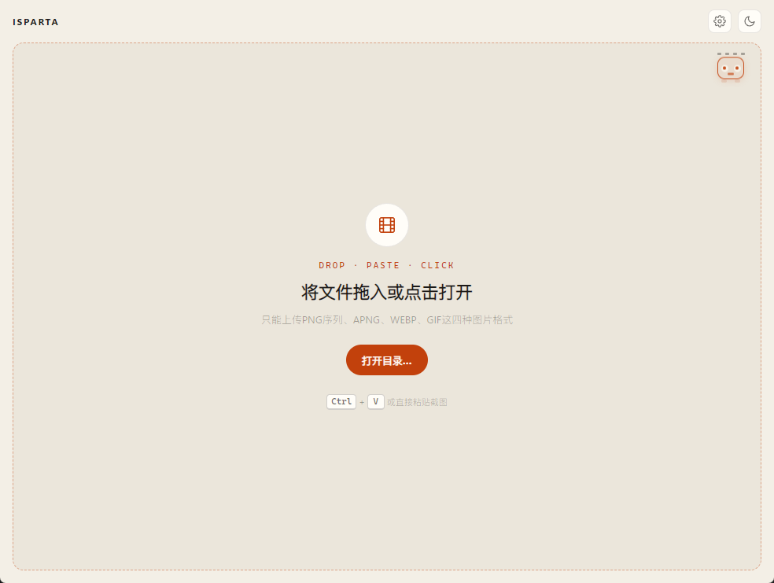
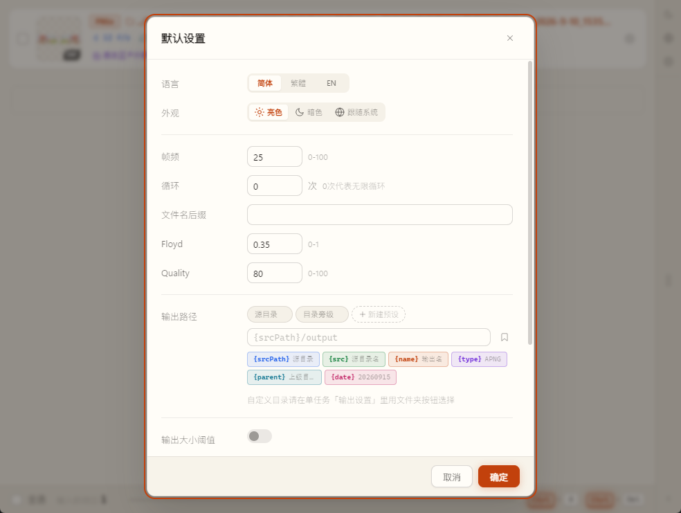

格式互转
支持 PNG 序列合成 APNG / GIF / Animated WebP，以及 APNG、GIF、WebP 之间的互转与再压缩，适合表情包、贴纸与帧动画导出。
桌面软件 + AE 插件，功能双份
把一堆图片变成 APNG / WebP / GIF 动图，也能把现有动图改小。桌面端拖文件就开工；在 After Effects 里自动读出工程全部合成，勾选就导出，两边功能一模一样，文件太大自动压到合适。
00 · ABOUT
iSparta-next（官网本页）是一款开源、跨平台的桌面动图转换工具，在长期停止维护的经典 iSparta 基础上重构，面向需要处理 PNG 序列、APNG、Animated WebP、GIF 的设计师与前端开发者。 与旧版相比，iSparta-next 升级到 Electron 28，重做了工作台 UI，并加入输出大小阈值、路径变量模板、批量导入与前后对比等能力。
支持 PNG 序列合成 APNG / GIF / Animated WebP，以及 APNG、GIF、WebP 之间的互转与再压缩，适合表情包、贴纸与帧动画导出。
输出大小阈值可在超出上限时自动按步长降质量重压，适配平台 1MB 等体积限制，减少手动反复试压缩。
拖拽 / 粘贴导入多组帧目录；路径变量模板与源目录输出策略，便于按项目批量导出与归档。
Windows / macOS / Linux 免费使用。安装包由 GitHub Actions 构建，可在 GitHub Releases 获取最新版；亦可从本页下载区选择对应平台。
02 · AFTER EFFECTS
打开面板就自动读出工程里的全部合成，勾选直接出 APNG / WebP / GIF，文件就存在工程旁边，不用来回切软件。
AE 合成 → PNG 序列 → APNG / WebP / GIF
一个安装包，组件页勾选「桌面版 / AE 扩展」，可只装其一；安装范围支持所有用户或仅当前用户。
合成列表自动刷新，藏在里面的子合成也找得全；任务列表、合成树两种视图随便切；双击一下就跳到那个合成。
不是砍出来的精简版：任务列表、设置、命名、日志，桌面有的 AE 里都有，还专门为小窗口重新排了版。
压缩、合成、降质的算法完全相同：桌面出的文件和 AE 出的文件，大小规则、命名习惯一模一样。
01 · WORKBENCH
选哪个文件夹、出什么格式、每秒几帧、循环几次、最大多大、文件叫什么、存到哪儿——全在一张卡片上配好，点开始就完事。
源类型
输出格式
当前路径：PNG 序列 → APNG
02 · SIZE GATE
导出 APNG / GIF / WebP 时先称一称：超过你设定的大小上限，就从更好的画质开始一档档降质量重压，直到达标。想自己定重试次数也可以。
03 · NAMING
长文件名自动拆成词，点一下留一个，也能只留文字；存放位置用 {工程名} 这类积木拼，实际路径马上预览给你看。
输出名字
输出路径
变量路径
真实路径
04 · RUN LOG
工具条一键打开运行日志：按级别筛（信息 / 成功 / 警告 / 错误），自动跟读最新输出。路径不对、编码失败、阈值重压——不用猜，直接翻这一屏。
05 · COMPARE
同一帧素材，左边是 PNG 序列原帧，右边是实际导出结果。切换格式后拖动分隔线：GIF 只有 2 级透明，边缘全是锯齿；APNG / WebP 保留了完整的半透明过渡。
06 · REAL UI
应用真实界面：空状态导入、任务卡片列表、参数设置、默认设置（命名 / 路径 / 大小上限）。
iSparta-next 工作台 与仓库 public/screenshot/ 同源 · 桌面 Electron 实拍



07 · GET IT
安装包由 GitHub Actions 构建。Windows 包可同时安装桌面与 AE 扩展。Windows / Linux 安装版支持应用内自动更新；macOS 未签名，首次打开见 Release 说明。
08 · WHY NEXT
原版长期停更；本仓库在社区 fork 基建上重写前后端，而不是只修几个按钮。
运行时
contextIsolation、sandbox，能力走 IPC 白名单，不再依赖 remote / 裸 Node。
界面
两栏任务列表、亮暗主题、前后对比；不再绑定 Element UI。
导出
大小超限自动降质量重压；保存位置和文件名都由你拼。
批量
多选、粘贴导入、全局默认设置、四态进度与批量开始。
依赖
libwebp 1.5（修 CVE-2023-4863）；受控 execFile，降低注入风险。
发版
GitHub Actions 构建 Win / macOS / Linux，自动版本与 Release Notes。
09 · LINEAGE
感谢原作者与每一位社区维护者。本仓库站在他们肩膀上继续改。
原版 · 长期停更
经典 APNG / WebP 桌面转换工具。Electron 与依赖停在旧线，大量历史 Issue 无人跟进，安全补丁跟不上——这是 fork 浪潮的起点。
基建 fork · 本仓库直接上游
libwebp 1.5（修 CVE-2023-4863）、Electron 6→13、Vue CLI 4、execFile 防注入、存储/转换锁修复、迁到 GitHub Actions。
当前 · iSparta-next
在 bigxixi 基建上再次 fork：Electron 28 + sandbox / IPC，弃用 Element UI 重做工作台，新增大小阈值、路径变量、拆字命名、前后对比等；三端 CI 发版。